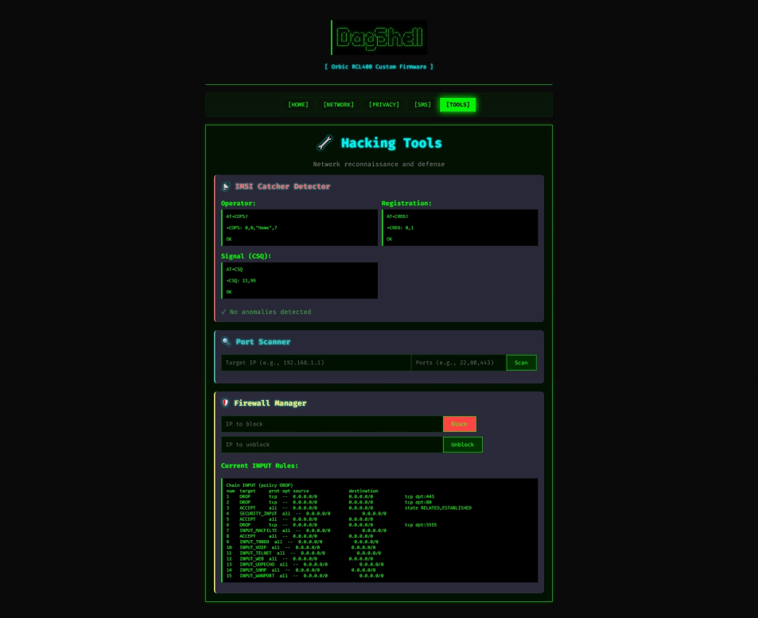

____ ____ _ _ _
| _ \ __ _ __ / ___|| |__ ___| | |
| | | |/ _` |/ _\___ \| '_ \ / _ \ | |
| |_| | (_| | (_| |__) | | | | __/ | |
|____/ \__,_|\__, |___/|_| |_|\___|_|_|
|___/
[ Orbic RCL400 Custom Firmware ]
A terminal-styled custom firmware for the Orbic RCL400 with hacking tools, privacy features, and full AT command access.
DagShell is a custom web-based control panel that runs on your rooted Orbic RCL400 LTE hotspot. It provides tools and features not available in the stock firmware.
Real-time signal, clients, data usage, and cell tower stats at a glance.
View interfaces, connected clients, active connections, and set custom TTL values.
MAC address spoofing and DNS-level ad blocking to protect your identity.
Send text messages directly through the hotspot's modem via AT commands.
Enhanced cell info display with automatic anomaly detection for fake towers.
Block/unblock IPs and manage iptables rules through a simple interface.
Auto-GPS on every page with cell tower lookup via OpenCellID.
Scan WiFi networks with GPS. Auto-waits for GPS and uploads to Wigle via browser.
Multi-select files, batch delete/download, with file size display.
Execute shell commands directly through the web interface.
Track cellular data per session with historical logging.
Monitor connected devices with MAC, IP, and connection logging.
The firmware features a terminal/hacker aesthetic with ASCII art, scanline effects, and glowing text.
Your Orbic RCL400 must have root access via an exploit. This unlocks the diagnostic port (24).
cd orbic_fw_c
.\build.ps1python deploy_base64.pyOpen your browser to: https://192.168.1.1:8443/